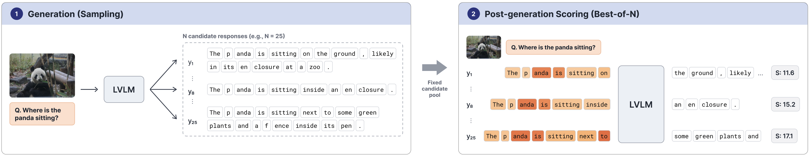
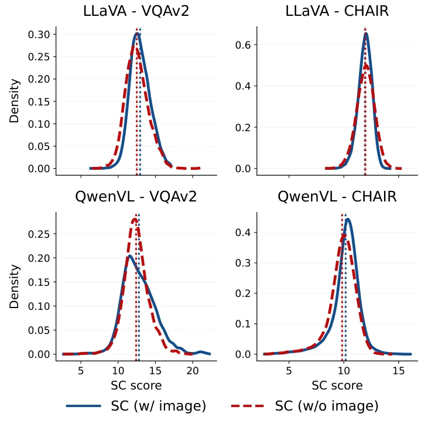
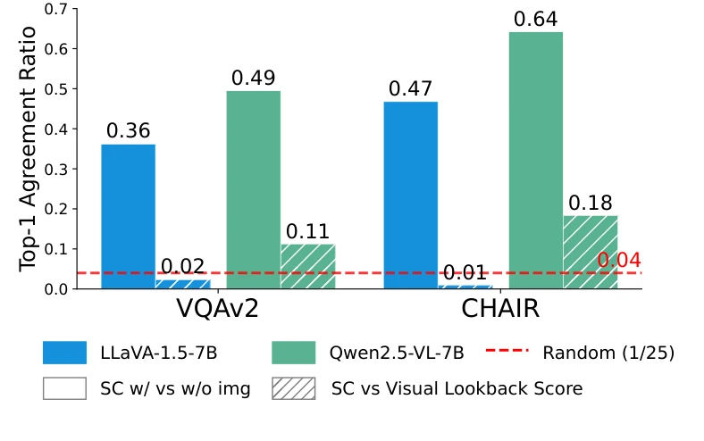
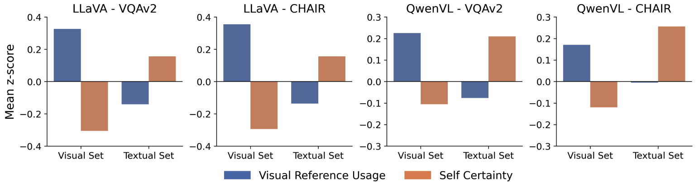
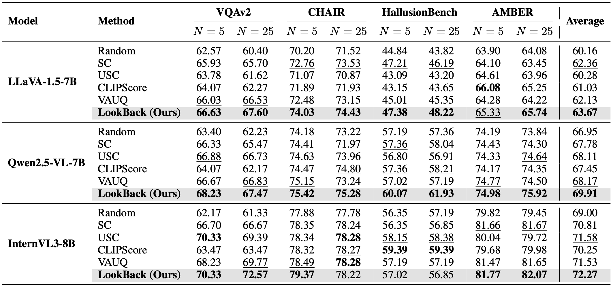
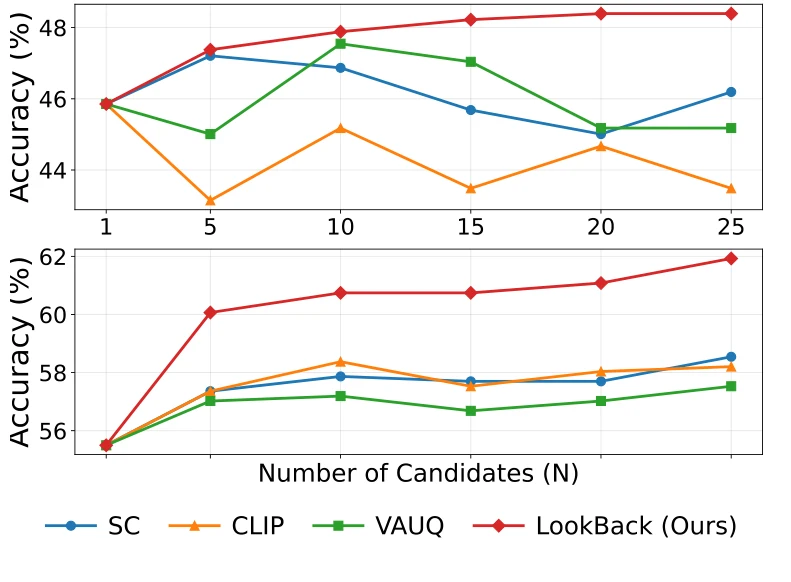
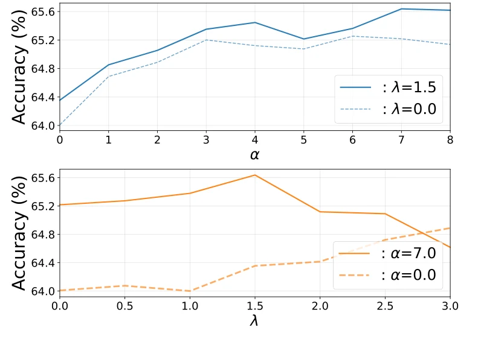

Large Vision-Language Models (LVLMs) integrate visual perception with language generation, enabling responses that span image understanding and complex reasoning. However, LVLMs do not just inherit the text-level hallucinations; they also hallucinate against the image, producing fluent responses ungrounded in what they see. This makes LVLM response scoring inherently harder, and our diagnostics show that existing confidence-based metrics adopted from LLMs are insufficient for LVLMs. Specifically, removing the input image barely changes confidence-based selection, suggesting that output-space confidence primarily captures textual plausibility rather than agreement with the image. To address this gap, we propose LookBack, a training-free LVLM response scoring method that augments token likelihood with visual lookback score, a lightweight measure of how strongly each response token refers to image tokens. Across four benchmarks and three models, LookBack consistently improves Best-of-N selection over existing baselines with negligible additional overhead.
Under stochastic decoding, LVLMs can produce responses of varying quality for the same input. Best-of-N seeks better responses by generating N candidates, ranking them with a scoring function, and selecting the highest-scoring one. We focus on self-scoring, which uses the LVLM’s own internal signals to evaluate candidate responses.
In our motivation experiments, we sample 25 candidates for each image–question pair and keep them fixed for scoring and selection. We score each response under teacher forcing: at each position, the model receives the candidate’s previously generated tokens and recomputes the next-token distribution.

We score the same image-conditioned responses using Self-Certainty, defined as \(\mathrm{SC} = \frac{1}{T}\sum_{t=1}^{T} D_{\mathrm{KL}}(U \| P_t)\), where \(T\) is the response length, \(U\) is the uniform distribution over the vocabulary, and \(P_t\) is the model's next-token distribution at position \(t\) under teacher forcing. We compute this score once with the original image and once without it. Holding the question and candidate text fixed isolates the effect of visual input on scoring and selection (paper, Section 3).
We test whether Self-Certainty (SC) actually depends on the input image. Its score distributions remain nearly unchanged when the image is removed, and the top-1 selection stays the same for 36–64% of the candidates (with a 4% random baseline at N = 25). Visual lookback, in contrast, favors visually referential words rather than primarily grammatical tokens.



For each generated token, we calculate its visual lookback score \(A_t\): the fraction of the model's attention directed toward image tokens. LookBack then combines language likelihood with this model-intrinsic visual signal, in two steps:
Calibrate each token's log probability with its visual reference usage. A linguistically confident token is penalized if it weakly references the image.
Visually informative positions receive more weight. These weights solve an entropy-regularized relevance maximization objective (Proposition 1).
Here, \(p_t\) is the generated token's probability and \(T\) is the response length. \(\alpha\) controls calibration strength; \(\lambda\) controls how strongly the weights favor visually relevant tokens.
LookBack is training-free and requires no additional reward model. Token probabilities and visual attention weights come from the same LVLM forward pass, so computing the visual lookback signal requires no separate model pass.
We evaluate Best-of-N selection across VQAv2, CHAIR, HallusionBench, and AMBER, using LLaVA-1.5-7B, Qwen2.5-VL-7B, and InternVL3-8B with N = 5 and 25. LookBack achieves the highest model-wise average for all three LVLMs.
| LVLM | Strongest baseline | LookBack | Gain |
|---|---|---|---|
| LLaVA-1.5-7B | SC · 62.36 | 63.67 | +1.31 |
| Qwen2.5-VL-7B | VAUQ · 68.17 | 69.91 | +1.74 |
| InternVL3-8B | USC · 71.58 | 72.27 | +0.69 |



Using one global pair of hyperparameters (α, λ) = (0.25, 1.25) across all three models still gives the highest model-wise average. LookBack also uses internal statistics instead of an external verifier or an additional scoring pass.
Provisional arXiv citation. Replace with the official ACL Anthology BibTeX once the proceedings entry is available.
@misc{cho2026lookback,
title={LookBack: Where and How to Score LVLM Responses via Visual Reference Usage},
author={Beomsik Cho and Jinhyeong Kim and Dongseok Lee and Jaehyung Kim},
year={2026},
eprint={2608.11847},
archivePrefix={arXiv},
primaryClass={cs.CV},
url={https://arxiv.org/abs/2608.11847}
}